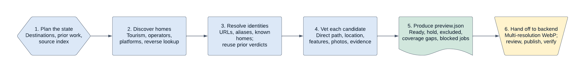

Pleasant Street
Making independent vacation rentals easy to find and book directly.
Travelers use a free map to reach the hosts’ own sites. The map helps hosts get discovered and introduces them to LAZY.
- Team
- Founder and product designer
- Timeline
- 2026 · In production
Problem
Independent hosts can offer direct bookings and still be hard for travelers to find. LAZY gives hosts a website of their own; travelers still had to find those independent rentals.
My role
As founder and product designer, I set the product strategy, designed the map and the search experience, defined the AI research and evaluation workflow, built the 17,000-place prototype and the production pipeline.
Result
The ongoing workflow has vetted 170,680 places across 30 states. The public map links travelers directly to the verified host sites.
Places
the prototype, then the production pipeline
States
researched; 20 remaining
Workers
concurrent AI workers in production; vetting batches of 20 candidates
Cost
for hosts and travelers; no LAZY purchase required
The problem we set out to solve
Independent hosts can offer direct bookings and still be hard for travelers to find. Direct relationships already exist in rental advertising: regional directories charge hosts for visibility and send travelers to a contact form or, sometimes, to the host’s website.
| Directory | Coverage | Cost of visibility | Traveler’s next step |
|---|---|---|---|
| Pleasant Street | U.S.; 30 states researched, 20 remaining | 100% free for hosts and travelers. No LAZY purchase required. | Open the host’s own website from the map or property card. The host keeps their existing site, booking process and guest relationship. |
| FloridaRentals.com | Florida | Paid host subscriptions; no booking or service fees. Personal-website links are included above the Basic tier in its plan comparison. | Contact the owner or manager through the listing; website links are also offered. Rental arrangements and payments stay with the owner or manager. |
| WeNeedaVacation | Cape Cod, Martha’s Vineyard and Nantucket | Paid host advertising plans; no commissions or guest booking fees. | Contact the owner or manager using the listing’s contact form; the host chooses payment methods. The cited pages do not establish a universal outbound website-link policy. |
Competitor descriptions are based on their linked FAQs, pricing and contact pages, reviewed November 23, 2026.
1. A discovery channel for LAZY
- Product designer
Problem
LAZY gives hosts a website of their own, but travelers still had to find those independent rentals.
Challenge
A link to the host’s own website is not unique on its own: FloridaRentals offers it too. The map had to combine free visibility, links to existing host websites and expanding U.S. coverage.
What I did
Designed the two products around the same host community. Pleasant Street is a free map that sends travelers to the host’s own website and introduces hosts to LAZY. Hosts keep their websites, booking processes and guest relationships; using LAZY is optional. The acquisition path runs from destination discovery to visits to host websites, visible value for hosts and qualified interest in LAZY.

The map needed an inventory that could be trusted.
2. Research with evidence
- Product designer
Problem
A 17,000-place prototype had to become repeatable research that could verify whether a site really offered direct booking.
Challenge
A direct-booking website does not establish owner operation, and several URLs do not establish several homes. Source scope and property identity had to survive every handoff.
What I did
Split the work between models through hands-on use: ChatGPT for strategic framing and vetting, Claude for search and discovery. Defined explicit handoffs with evidence attached, from strategy to search, search to vetting, vetting to follow-up and prototype to production, and separate states for discovered candidates, verified websites, holds, unavailable sources and exclusions. Unknown values stay unknown.

Then the research had to keep running in production.
3. A pipeline that recovers
- Product designer
Problem
Nationwide research takes time: catalogs must be searched, identities reconciled and incomplete evidence revisited, and runs stall.
Challenge
A complete record is not a correct one. Progress had to count only distinct, valid evidence events, and factual checks still depend on the underlying sources.
What I did
Designed and built the production workflow: six concurrent workers, vetting batches of 20 candidates, checkpoint recovery and an independent monitor. An attempt that saves no new valid evidence for 15 minutes gets one recovery attempt, and a fresh worker inherits the saved history. Blocked jobs stay explicit while other work continues. The backend then prepares the images as WebP in multiple resolutions for publication.

For travelers, all of this had to stay out of sight.
4. A friendly map
- Product designer
Problem
A map full of individual pins becomes difficult to read as inventory grows.
Challenge
Travelers had to compare homes and follow the direct link without learning how the research worked.
What I did
Chose a deliberately “uncool” visual direction drawn from 1950s design: a script wordmark, serif type, a turquoise palette, rounded controls, illustrated houses and restrained motion. Replaced dense pins with numbered circles, kept the map and card views tied to the same filters, and wrote the filters in plain language: capacity, accommodation type, children and pets.

See more: the earlier map, filters, property details, cards, mobile


Result
The prototype covered 17,000 places. After the handoff to a system administrator, the production pipeline has vetted 170,680 places across 30 states, and the public map links travelers directly to the verified host sites. Deliverables: the public rental map with property cards and direct booking links, the evidence-based research and vetting workflow, and the publication handoff for verified listings and images. The remaining 20 states make this continuing work.
Places
the prototype, then the production pipeline
States
researched; 20 remaining
Workers
concurrent AI workers in production; vetting batches of 20 candidates
Cost
for hosts and travelers; no LAZY purchase required